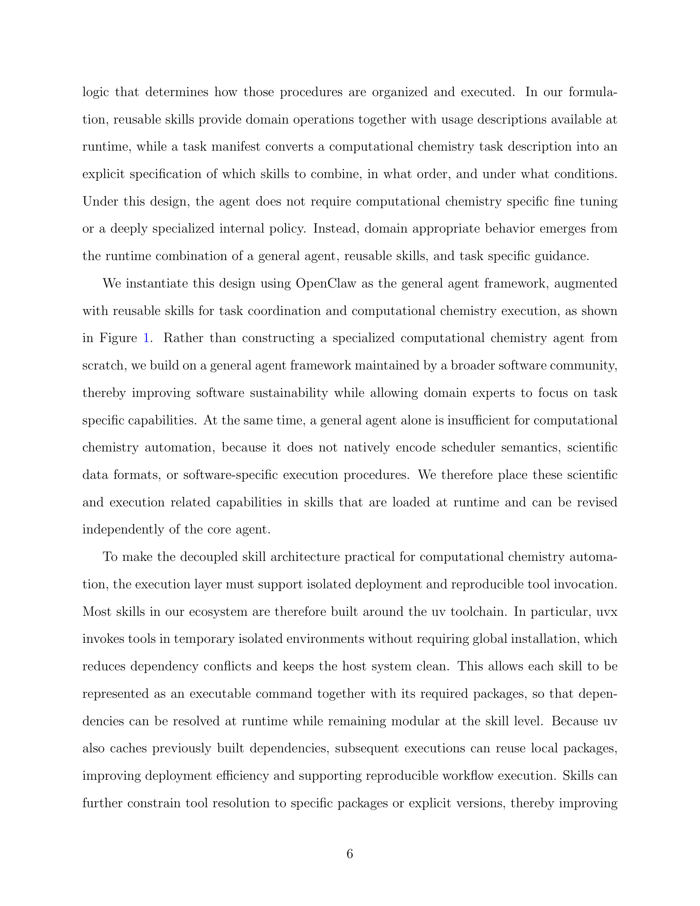

저자: Mingwei Ding, Chen Huang, Yibo Hu, Yifan Li, Zitian Lu, Xingtai Yu, Duo Zhang, Wenxi Zhai, Tong Zhu, Qiangqiang Gu, Jinzhe Zeng | 날짜: 2026-03-26 | Journal: arXiv preprint | DOI: N/A | arXiv: 2603.25522

Figure 1
계산 화학 자동화의 핵심 장벽은 추론·워크플로 명세·소프트웨어 실행·HPC 실행이 단일 에이전트 안에 강하게 결합되어 있어 새 기능 추가 시 에이전트 전체를 재설계해야 한다는 점이다. 이 논문은 OpenClaw를 범용 제어 루프로 삼고, schema 기반 planning skill이 과학적 목표를 실행 가능한 task specification으로 변환하며, domain skill이 특정 화학 소프트웨어 절차를 캡슐화하고, DPDispatcher가 HPC 스케줄러를 추상화하는 분리형(decoupled) agent-skill 아키텍처를 제시한다. 메탄 산화 반응 MD 사례 연구에서 인간 개입 없이 다단계 크로스-툴 실행, 런타임 오류 복구, 반응 네트워크 추출을 완수하였다.
Figure 1
Figure 1: OpenClaw 기반 분리형 agent-skill 프레임워크 아키텍처. 중앙 제어 루프(OpenClaw), planning skill, domain skill, DPDispatcher의 역할 분담을 도식화.
| 항목 | 점수 |
|---|---|
| Novelty | 3/5 |
| Technical Soundness | 4/5 |
| Significance | 4/5 |
| Clarity | 4/5 |
| Overall | 4/5 |
총평: 계산 화학 자동화의 결합 문제를 agent-skill 분리 아키텍처로 깔끔하게 해결하며, 실제 메탄 산화 MD 사례로 실행 가능성을 입증한 완성도 높은 시스템 논문이다. 단일 사례 연구의 한계가 있으나 재현 가능하고 확장 가능한 설계 원칙이 명확하여 AI for Science 자동화 플랫폼 연구에 중요한 기여를 한다.